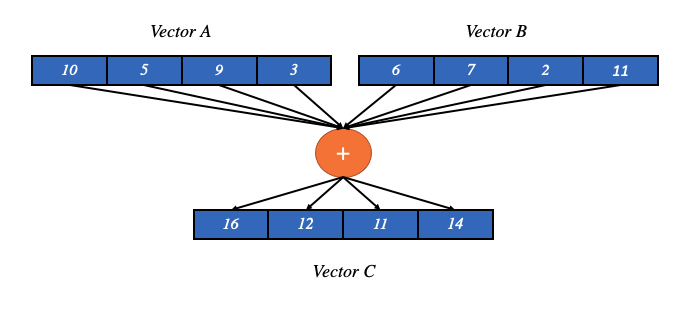

OneMKL随机数生成器¶
Intel® OneMKL (oneAPI Math Kernel Library)是一个高度优化和广泛并行的程序指令的计算数学库，用于需要性能最大化的程序应用。OneMKL包含了针对CPU架构的高性能优化，能够在各种CPU架构上实现性能，以及针对某些关键功能的Intel图形技术。针对随机数生成，Intel® OneMKL提供了常用的具有离散分布和随机分布的伪随机、准随机和非确定性的随机数生成程序。与普通的随机数生成器不同的是，OneMKL随机数生成器通过调用高度优化的基本随机数生成器和基于SIMD的向量数学函数进行开发，充分利用现代CPU对SIMD向量化计算的优势，从而能够大幅提升随机数生成的速率。
OneMKL的安装 详见。
SIMD简介¶
SIMD (Single Instruction, Multiple Data, 单指令多数据流) 1 是弗林分类法（ Flynn’s Taxnomy ）中的一种并行处理。SIMD可以是内部的，即硬件设计的一部分，并且能够通过指令集架构（instruction set architecture, ISA）直接访问。然而，这些机器使用数据层级上的并行性（parallelism），而不是并发性（concurrency）：虽然有同时进行的并行运算，但是每个SIMD单元无论何时都执行相同的指令，只是数据不同而已。
SIMD认为计算机具有多个处理元素，并且这些处理元素在多个数据点上同时执行相同的运算。通常情况下，SIMD单元中的操作包括基本的数学运算（比如加、减、乘、除）及其他常见的数学运算，包括绝对值（abs）和平方根（sqrt）的运算 2。
经典示例¶
SIMD接收两个向量作为输入（每个向量都有一组运算对象），对这两组运算对象（每个向量都有一个操作数）执行相同的运算，并输出一个带结果的向量：
C[3:0] = A[3:0] op1 B[3:0];
如下图所示（假设op1为加）：
Intel OneAPI简介¶
Intel OneAPI 3 是一个统一应用程序编程接口的开放标准，其目的在于能够跨越不同的计算加速器架构下使用，包括GPU，AI加速器和FPGA(Field Programmable Gate Array，现场可编程逻辑门阵列)等。
OneAPI的开发目的是解决开发人员在不同的体系架构中维护独立代码库、多种编程语言以及不同工具和工作流下的需求，OneAPI通过在加速器架构之间提供相同的语言和编程模型，进而简化了软件开发。因此，OneAPI涵盖了多个能够在计算加速中进行大幅优化的领域，并且针对不同的应用情形，OneAPI开发了数学、深度学习、机器学习、视频处理等库。
OneMKL优化随机数的方法¶
基本随机数生成器的优化¶
Intel OneMKL提供了两种基于计数（counter-based）的基本随机数生成器：ARS-5和Philox4x32-10：
ARS-5 |
ARS-5是基于AES（Advanced Encryption Standard，高级加密标准）的基本随机数生成器，并且在发生器状态中进行了五次算法迭代。 |
Philox4x32-10 |
Philox4x32-10依赖于代换-置换网络（substitution-permutation network, SPN），该网络负责4个32位输入参数上产生高度扩散的双射（bijection）和10轮的置换。 |
这两个生成器的周期都能产生 \(2^{130}\) 的随机数序列，并且都展现出了良好的统计特性及优异的随机数序列生成性能 5 。不仅如此，ARS-5和Philox4x32-10的状态规模较小，能够更容易地在不同硬件上进行向量化和并行化运算。
2021年中上旬，OneMKL针对ARS-5使用的向量高级加密标准（Vector Advanced Encryption Standard, VAES）指令集进行了额外优化，大幅提升了该随机数生成器的性能。
Vectorization¶
向量化（vectorization）是提高现代CPU性能的关键工具 6 。通过向量化，能够实现从一次操作多个值转换为一次操作一组值，而现代CPU能够直接支持 SIMD 向量运算。
例如，一个512位寄存器的CPU可以容纳16个32位单精度的double浮点数并进行单次运算。比单次执行一条指令快16倍。将向量化与多线程和多核CPU结合，可以带来数量级的性能提升。
指令级并行¶
随着多核芯片设计为指令级并行 (instruction level parallelism)提供了可能性，SIMD寄存器的宽度也因此在稳步增加，开发指令级并行性也被称为 向量化。
目前，最新的处理器都具有多核，并且能够在日益增加的大型数据集上执行单指令，并且SIMD也提供了一种使用更少功耗且提高性能的方法。Intel OneAPI通过将多线程和向量化结合起来，能够在最新处理器上最大程度地实现性能方面的提升。
随机数生成器在蒙卡中的应用¶
在蒙卡模拟中，随机数服从正态分布。而OneMKL中针对蒙卡模拟中使用的随机数是其矢量（Vector Statistics）统计生成器的结果。在下文中将详细介绍OneMKL生成随机数的基本逻辑及其正态分布随机数的具体生成方法。
分布（Distribution）¶
所有非均匀分布的生成，无论是离散的还是连续的，都是在均匀分布的基础上生成的，这在OneMKL中被称为BRNGs(Basic Random Number Generators)。通过对均匀分布的伪随机数进行适当的变换，就能够获得非均匀分布的随机数。这种转换方法在OneMKL中被称为 生成方法 （generation method）。针对给定的分布，可以使用不同的生成方法。
服务程序（Service Routines）¶
OneMKL通过流处理提供服务，流处理包括创建、删除、或复制流的程序，以及获得一个基本生成器的索引，一条随机流也可以在二进制文件中保存并读取。
大多数和生成器相关的工作主要包括三个基本步骤：
创建并初始化一个流
根据给定的分布生成随机数
删除流
命名规则¶
对于给定概率分布的每个生成器程序的原型符合以下的结构：
<function name>(method, stream, n, r, [<distribution parameters>])
参数名称 |
定义 |
|---|---|
<function name> |
指定概率分布函数的随机数生成器的结构方程 |
stream |
一个随机序列，可以通过流状态描述符进行操作。 |
method |
对应分布下随机数的生成方法 |
n |
定义要生成的随机数的数量。如果n小于或等于0，那么不生成任何值。 |
r |
为生成的数定义了目标数组。数组的维度必须足够大，以存储至少n个随机数。 |
<function name>命名规则¶
随机数生成的程序具有以下结构：
v<结果类型>Rng<分布名称>
结果类型名称 |
对应的结果类型 |
注意事项 |
|---|---|---|
s |
float |
仅适用于 连续分布 |
d |
double |
仅适用于 连续分布 |
i |
int |
仅适用于 离散分布 |
OneMKL支持的分布，详见 所有的分布生成器 。
针对在蒙卡模拟中的实际运用，相关的随机数生成所服从的正态分布在OneMKL中对应的分布名称为 Gaussian。因此，需要调用的结构为
vsRngGaussian
method命名规则¶
VSL_RNG_METHOD_<distribution>_<method>
参数名称 |
定义 |
|---|---|
<distribution> |
概率方程 |
<method> |
对应概率密度下的方法名称 |
正态分布支持的<method>¶
在OneMKL中支持三种正态分布的生成方法：
方法名称 |
定义 |
|---|---|
BOXMULLER |
BOXMULLER通过均匀分布的数字 \(u_1\) 和 \(u_2\) 产生正态分布的随机数 \(x\)。 |
BOXMULLER2 |
BOXMULLER2通过均匀分布的数字 \(u_1\) 和 \(u_2\) 产生正态分布的随机数 \(x_1\) 和 \(x_2\)，详见 Box-Muller 方法。 |
ICDF |
Inverse Cumulative Distribution Function，逆累积分布函数法。 |
Example¶
要得到一个由n个独立同分布的正态（高斯）分布随机数并且采用ICDF方法组成的向量r，其均值为a，标准差为sigma，其定义如下：
vsRngGaussian(VSL_RNG_METHOD_GAUSSIAN_ICDF, stream, n, r, a, sigma);
具体示例¶
生成1万个随机数，指定随机数生成的种子为777，并服从（0，1）正态分布:
#include "mkl.h"
int main(){
int n = 10000;
auto eps = static_cast<float *>(calloc(n, sizeof(float)));
// 初始化流状态描述符
VSLStreamStatePtr stream;
// 初始化和创建流
vslNewStream(&stream, VSL_BRNG_MT2203, 777);
// 产生随机数
vsRngGaussian(VSL_RNG_METHOD_GAUSSIAN_ICDF, stream, n, eps, 0.0, 1.0);
// 删除流
vslDeleteStream(&stream);
return 0;
}
Appendix¶
References¶
- 1
Single instruction, multiple data, Wikipedia https://en.wikipedia.org/wiki/Single_instruction,_multiple_data.
- 2
Cardoso, J.M.P., Coutinho, J.G.F. and Diniz, P.C. (2017) High-performance embedded computing, Embedded Computing for High Performance. Morgan Kaufmann.
- 3
oneAPI (compute acceleration), Wikipedia https://en.wikipedia.org/wiki/OneAPI_(compute_acceleration).
- 4
Math Kernel Library, Wikipedia https://en.wikipedia.org/wiki/Math_Kernel_Library.
- 5
Dyakov, P., and Elizarova, A. (2021) Counter-based Random Number Generators in Intel® oneAPI Math Kernel Library, https://www.intel.com/content/www/us/en/developer/articles/technical/counter-based-random-number-generators-in-oneapi.html.
- 6
Khartchenko, E. (2018) Vectorization: A Key Tool To Improve Performance On Modern CPUs, https://www.intel.com/content/www/us/en/developer/articles/technical/vectorization-a-key-tool-to-improve-performance-on-modern-cpus.html.
- 7
Developer Reference for Intel oneAPI Math Kernel Library - C, https://www.intel.com/content/www/us/en/develop/documentation/onemkl-developer-reference-c/.
- 8
Flynn’s taxonomy, Wikipedia https://en.wikipedia.org/wiki/Flynn%27s_taxonomy.